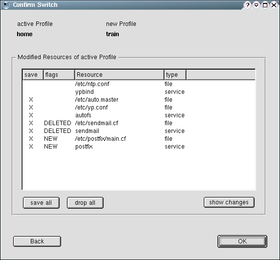

The switch dialog is entered by clicking Switch ... or Reload in the main dialog.
approved helptextWhen you leave a profile, there might be changes in resources covered by SCPM. You have to decide what to do with these changes. Save them to the profile or Drop them. The flags DELETED or NEW show that a resource will be deleted or added to the profile. This only happens if you changed the resource set in the SCPM options or if packages have been installed or removed from the system. The resource type file explains itself. The resource type service means that there are changes in the runlevel links of this service, which decide if a service has to be started in a runlevel. If you are unsure what was changed in a resource, select it and use Show changes. This will show you the changes in the selected resource. |
 |
This dialog handles the hole switch to another profile. That means, the switch has to be prepared here, possibly modified, new, or obsolete resource has to be presented to the user, and afterwards the switch itself has to be performed based on the user decision what to do with that resources.
To gather the needed inforation about the modified resources, the
switch has do be prepared. For that purpose,
directly after entering this dialog
SPCM:PrepareSwitch gets called. You need to create a struct
of switch_info_t
type first. Performing this command usually writes some information on
the first stream object you passed when creating the SCPM object, see
constructor documentation. Those
informations get presented to the user by a special popup, see
progress popup documentation.
After the switch was prepared, you have your
switch_info_t
struct filled with data. For every item in the
modified_resources
vector of the struct, one entry in the table list Modified
Resources gets generated. The flags Save, New, and
Deleted are saved in the respective flags
switch_info_t::save, switch_info_t::is_new,
and switch_info_t::is_deleted of the struct. The
switch_info_t::save element should be modified to match
the users selection.
Save flag of this resource.
Save flags of all resources to true.
Save flags of all resources to false.
SCPM::ShowChanges
with the selected resource as an
argument and show the changes in a pop-up with a single RTF field and a close
button.
switch_info_t struct can be dropped.
SCPM::Switch
with the possibly modified switch_info_t struct. The
progress popup is needed here again.
Please first launch this dialog, then raise the progress popup. After PrepareSwitch has finished fill the table. When leaving the dialog, first show the progress popup the second time before really leaving. The progress popup should always raise from this dialog.